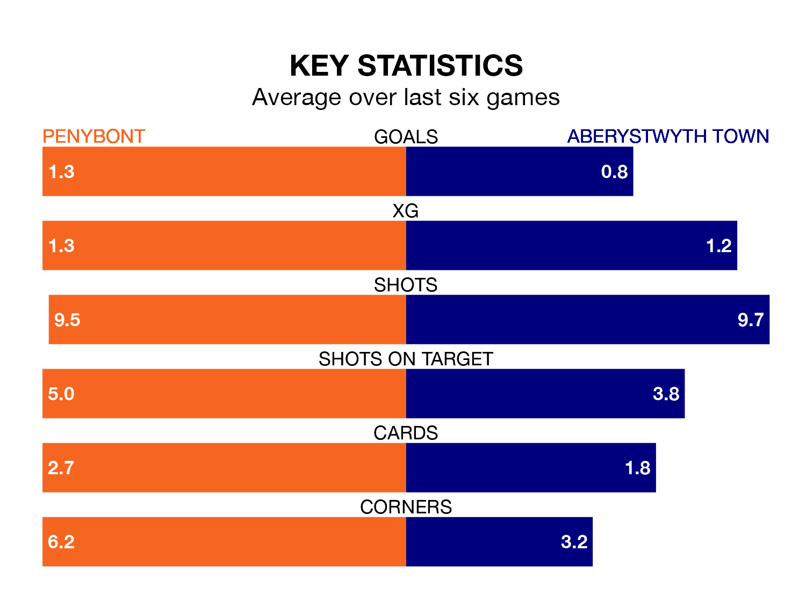

Aberystwyth Town travel to the SDM Glass Stadium for Friday's late match against Penybont looking to bounce back from defeat last time out in the Welsh Premier League.
The Seasiders, who sit zero in the league after 24 games, fell to a 1-0 home defeat to Colwyn Bay on February 9.
They face a Penybont side who secured a draw in their last match, a 2-2 tie with Barry Town United, and who sit zero in the table.
With 19 goals in 24 games so far this season, Aberystwyth are the league's-4th-lowest scorers with 0.8 goals per game. And they are conceding more than average, letting in 47 goals at a rate of 2.0 per game.
Penybont are also below average scorers, with 1.3 goals per game, compared to a league average of 1.5. They have conceded 1.5 goals per game.
In the last 10 years, Penybont and Aberystwyth have played each other on 12 occasions. Penybont won six of them, Aberystwyth two, and they drew four times.
On average, Bont scored 1.7 goals and the Seasiders 0.8 in those matches.
Their last meeting was on October 27, when Aberystwyth won 2-0 away.
Bont are in mixed form in the Welsh Premier League, with three wins and a draw from their last six games.
With two wins and a draw over that period, Town's form is worse – they have taken seven points from 18, compared to the hosts' 10.
Updated: 13:30 (UTC), 12/02/24